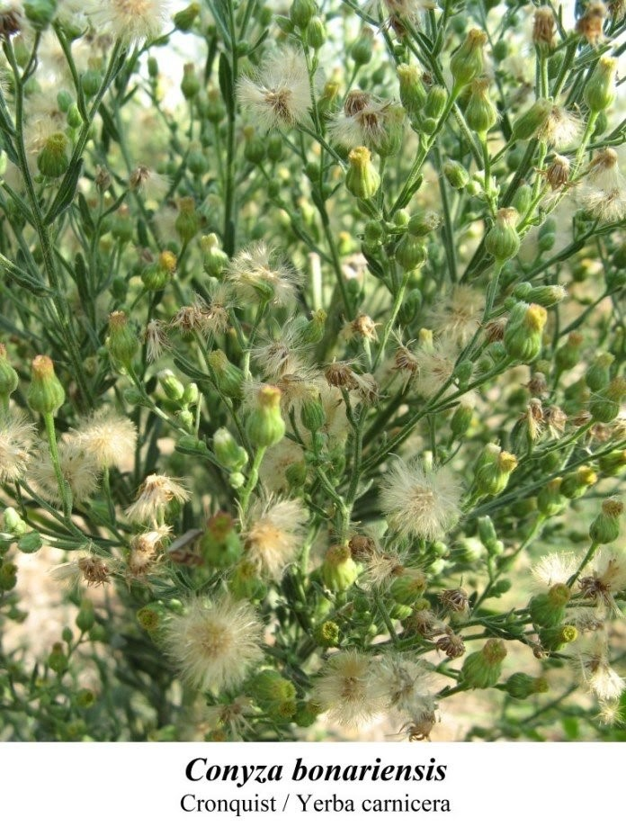
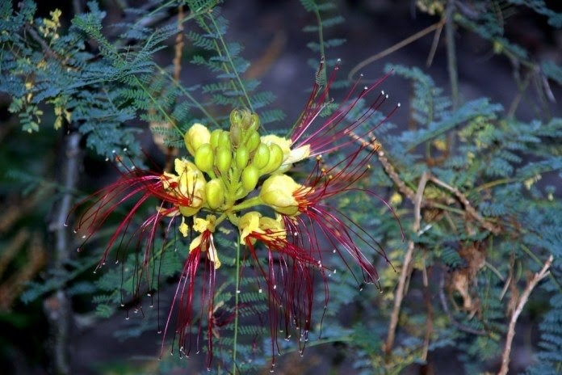

Yerbas Medicinales
Cola de Caballo
La cola de caballo (Equisetum arvense) se emplea como depurativa y diurética, estimulando la eliminación de toxinas y líquidos del cuerpo, siendo eficaz para tratar enfermedades urinarias (infecciones, cálculos renales, etc.-), calmar dolores de ovarios o problemas reumáticos, para detener hemorragias o incluso para las hemorroides.
Yerba carnicera

La yerba carnicera (Conyza bonariensis) se usa para aliviar males digestivos y como descongestionante del hígado.
Además de su acción hepatoprotectora, diurética y digestiva, esta hierba sirve para tratar la acidez del estómago, como antirreumática, antidiarreica y antiulcerosa, para bajar la fiebre, eliminar el ácido úrico, para afecciones del aparato genital y las vías urinarias.
Sus hojas aplicadas en cataplasma se utilizan sobre heridas o granos, actuando como antiséptico
Anacahuita
La anacahuita (Schinus molle) es un árbol empleado por la medicina popular para afecciones como la tos, la bronquitis o el resfrío.Además, es un excelente repelente naturalcontra las moscas.
También se usa en enfermedades de los riñonesy su resina pulverizada y seca sirve para cerrar y desinfectar heridas. Es posible hacer un jarabe natural de anacahuita para la tos, o inhalar sus hojas junto a hojas de eucalipto para calmar problemas bronquiales.
Pitanga
La pitanga (Eugenia uniflor) es un pequeño arbusto de ricos frutos, aprovechada tradicionalmente para dolores de estómago o de garganta, además de presentar un gran valor nutricional -muchos minerales y vitaminas, así como componentes antioxidantes-.
Se cree que aborígenes de nuestras tierras mascaban su hoja como digestivo, siendo un eficaz remedio estomacal.
Yerba del pollo
La yerba del pollo (Alternanthera repens) es una hierba rastrera empleada por diferentes pueblos de América para el tratamiento de males digestivos y del hígado, así como para trastornos gastrointestinales y diarreas en niños tras indigestiones.
También sirve como diurética -favorece eliminación de orina- y como depurativa de la sangre. Se usa, además, para varias afecciones intestinales.
Marcela
Otro calmante natural de problemas digestivos, la marcela (Achyrocline satureioides) presenta virtudes medicinales para malestares del estómago, calambres estomacales, náuseas, diarreas, acidez o problemas gástricos.
En uso externo ayuda a reducir dolores en músculos o reumáticos. Y posee un prometedora acción para el control de enfermedades cardiovasculares.
Palán Palán
Nicotiana glauca, bautizada popularmente como palán palán, es un arbusto que en nuestro país suele crecer entre escombros o colgando de paredes viejas. Medicinalmente, se usa para la curación de granos, lastimaduras o llagas,además de servir como un calmante natural para las hemorroides
Pata de vaca
Bauhinia candicans, más conocida como pata de vaca, se llama así porque sus hojas se parecen a la huella que deja el ganado vacuno sobre la tierra. Además de emplearse en gargarismos para el lavado de heridas, úlceras o llagas, se emplea especialmente como un complemento natural en el tratamiento de la diabetes.
Barba de chivo

Por su colorido atractivo, la barba de chivo (Caesalpinia gillesii) suele usarse como planta ornamental, aunque este abusto también se utiliza medicinalmente, tanto para bajar la fiebre o como purgante, además de ser una planta insectívora, al segregar una sustancia viscosa que digiere los insectos que en ella se posan.
Carqueja
La carqueja (Baccharis trimera) es una maleza que habita en los campos, siendo una de las más valoradas plantas medicinales de Uruguay, empleada popularmente para tratar enfermedades del estómago, el hígado o los riñones, para reducir la fiebre, lavar heridas o para el reumatismo muscular aplicada en compresas.
Su uso puede colaborar a descongestionar el hígado, en úlceras estomacales, cólicos biliares, diarrea o indigestión, así como en el alivio de problemas gastrointestinales.
Yerba de la piedra
Pequeño liquen arborescente que crece sobre las piedras, la yerba de la piedra (Usnea hieronymii Kremp.) se emplea para la curación de heridas o para aliviar dolores de garganta.
Dado su contenido de ácido úsnico, se la considera un eficaz antibiótico natural y agente antimicótico (evita el desarrollo de ciertos hongos o los mata), pudiendo servir para el tratamiento de lastimaduras, para lavar llagas ulcerosas o verrugas.
En uso externo se utiliza para inflamaciones en la boca y la garganta, mientras que en uso interno se la indica para combatir diversos trastornos digestivos.
Diente de León
A menudo considerado una maleza que se quita sin más, el diente de león (Taraxacum officinale) no debería desecharse, ya que posee una variedad de bondades medicinales.
Es uno de esos yuyos que crecen salvajemente en diferentes partes del globo, muy usado como diurético, para males digestivos, trastornos biliares y gastrointestinales, también para afecciones reumáticas o incluso para la falta de apetito, gracias a su alto valor nutritivo.
Mburucuyá
Además de exhibir flores tremendamente bellas y un delicioso fruto, el mburucuyá (Passiflora edulis) se ha usado como un ansiolítico natural gracias a su efecto sedante, pudiendo ayudar a calmar estados de excitación, nerviosismo o insomnio, o también como un complemento efectivo para tratar la hipertensión arterial.
Sirve a su vez como digestiva, facilitando la asimilación de alimentos, o como depurativapara limpiar el organismo. Su fruta, el maracuyá, colabora en casos de estreñimiento y puede ser una opción ideal para adelgazar.